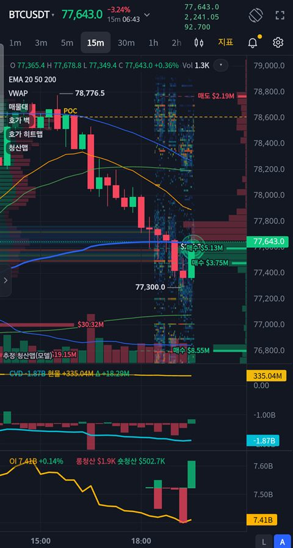

유튜브를 보거나 게임을 하는 동안 투명한 숫자로 화면 위에 떠 있고, 누르면 그 자리에서 차트가 열립니다.
무료 · 광고 없음 · 거래소 계정과 API 키 불필요 · Android 8.0 이상

배경 없는 투명한 숫자로 화면을 가리지 않습니다. 끌어서 옮기고 글자 크기와 색을 바꿀 수 있습니다. 잠금화면 알림에서도 시세를 볼 수 있습니다.
기본 지표와 지표 라이브러리 59종, CVD, 미결제약정, 청산, 호가 벽과 히트맵, 풋프린트, 그리기 도구, Pine Script 지표를 씁니다.
거래량 급증, 돌파, 다이버전스 같은 조건을 정해 두면 앱을 닫아도 알려 줍니다.
Bybit, OKX, Hyperliquid, Bitfinex 체결을 더해 시장 전체의 매수 · 매도 흐름을 봅니다.
Google로 로그인하면 지표, 작도, 알람, 관심 종목이 앱과 웹에서 자동으로 맞춰집니다. 로그인은 선택입니다.
소스 코드를 모두 공개합니다(AGPL-3.0). 어떤 데이터를 어디로 보내는지 직접 확인할 수 있습니다.